Scratch
Halloweenimasjon
Vi vil her se på hvordan vi kan lage forskjellige animasjoner med et Halloween-tema. Disse kan vi enten dele med vennene våre gjennom Scratch, eller kanskje enda morsommere: Vi kan projisere dem på en gardin, et laken eller en vegg under Halloween.

Vi begynner med å la et skummelt spøkelse fly fram og tilbake over skjermen.
Start et nytt prosjekt. Slett kattefiguren, ved for eksempel å klikke på  i menylinjen øverst på skjermen, og deretter på katten.
i menylinjen øverst på skjermen, og deretter på katten.
Velg en ny figur ved å klikke  . Finn et skummelt spøkelse! Vi har brukt
. Finn et skummelt spøkelse! Vi har brukt Fantasi/Ghost2.
Trykk på i øverst til venstre på den nye spøkelsesfiguren din. Gi den navnet Spøkelse.

Nå skal vi lage et enkelt skript som får spøkelset til å fly over skjermen. Bygg sammen en gjenta- og en gå-kloss på denne måten:
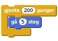
Klikk på skriptet ditt for å starte animasjonen. Flytter spøkelset ditt på seg? Ser du et problem?
Spøkelset ser ut som om det setter seg fast når det kommer til kanten! Dette kan vi fikse med en sprett tilbake-kloss:
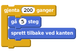
Klikk på skriptet ditt igjen. Virker det bedre nå?
Hmm ... Spøkelset flyr opp-ned ... Det ser litt rart ut. Vi kan si at spøkelset bare skal snu seg sidelengs med en begrens rotasjon-kloss. Denne legger vi helt først i skriptet på denne måten:
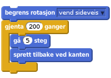
Til slutt, det ser skumlere ut med en svart bakgrunn! Klikk på Scene helt til venstre på skjermen, og deretter på Bakgrunner-fanen nesten øverst på skjermen.
Klikk på malingsspannet,  , og deretter på den hvite bakgrunnen for å male denne svart.
, og deretter på den hvite bakgrunnen for å male denne svart.
Gi bakgrunnen navnet Svart.
For vår andre animasjon vil en demon komme flyvende mot oss.

Lag en ny figur ved å klikke . Vi har brukt Fantasi/Ghoul. Endre navnet på figuren til Demon.
For at det skal se ut som demonen kommer flyvende mot oss, vil vi at den skal starte veldig liten, og deretter bli større. Lag dette skriptet.
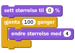
Trykk på skriptet for å se om det virker.
Et lite problem er at spøkelset også ligger på skjermen. Det vil være bedre å skjule spøkelset når det ikke animeres. Klikk på spøkelsesfiguren, og legg til en vis- og en skjul-kloss i skriptet:
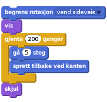
Klikk på spøkelset sitt skript. Skjules spøkelset etter at det er ferdig med å fly frem og tilbake?
Vi kan også gjøre det samme med demonen sitt skript. Klikk på demon-figuren, og endre skriptet til
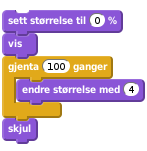
For å få litt variasjon vil vi at demonen skal animeres over en skummel skog-bakgrunn. Klikk på  helt til venstre på skjermen, og velg bakgrunnen
helt til venstre på skjermen, og velg bakgrunnen Utendørs/forest. Gi bakgrunnen navnet Skog.
Vi vil nå se på hvordan vi lett kan bytte bakgrunn når vi starter en animasjon.
Hvis vi for eksempel vil vise spøkelsesanimasjonen på svart bakgrunn må vi først klikke Scene, deretter Bakgrunner-fanen og den svarte bakgrunnen. Videre må vi klikke på spøkelsesfiguren, Skript-fanen og til slutt på selve skriptet. Dette er veldig tungvint! Vi vil nå se hvordan vi kan bruke meldinger for å gjøre dette mye enklere.
Meldinger gjør det lett å få flere ting til å skje samtidig. Vi skal nå først lage en melding, Animer spøkelse. Vi vil at denne meldingen skal både bytte bakgrunnen og starte spøkelsesanimasjonen.
Klikk på Scene og lag dette skriptet:
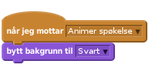
Klikk på spøkelsesfiguren og endre skriptet ved å legge til en kloss på toppen:
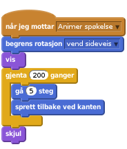
Nå venter skriptene våre på meldingen. For å teste kan vi dra klossen
ut ved siden av det store skriptet til spøkelset.
Send meldingen ved å klikke på send melding-klossen. Animeres spøkelset over en svart bakgrunn?
Vi vil nå gjøre det samme for demonen. Legg til et nytt skript på scenen:
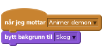
Klikk på demonfiguren og endre skriptet slik
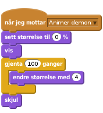
Legg også til klossen
for å teste at animasjonen fungerer.
Send meldingene som animerer spøkelset og demonen. Starter animasjonene når du klikker på meldingene? Byttes bakgrunnene riktig?
Nå skal vi se hvordan vi kan koble sammen animasjonene slik at de vises i sekvens etter hverandre.
Vi begynner med å lage en for alltid-løkke på scenen, som sender meldinger:
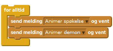
Klikk på skriptet for å teste det. Trykk den røde stopp-sirkelen for å stoppe animasjonen. Vises animasjonene etter hverandre i en evig løkke?
Det vil se litt bedre ut med en kort pause mellom animasjonene. Legg til et par vent-klosser i skriptet.
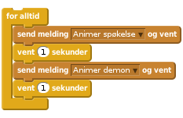
For å gjøre det enklere å starte animasjonen legger vi til en kloss som gjør at animasjonen starter når det grønne flagget øverst på skjermen klikkes.
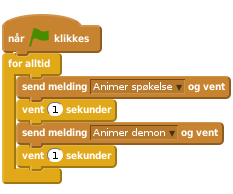
Vi kan også bruke grønt flagg-klosser på figurene for å være sikre på at de starter animasjonen på riktig måte. Legg dette skriptet på spøkelset:

Legg et tilsvarende skript på demonen:
Klikk på det grønne flagget.
Kjøres begge animasjonene etter hverandre? Dukker figurene opp når de skal?
Endre gjerne i animasjonene slik at du synes de ser bedre ut. Kanskje du vil ha litt andre figurer? Hvordan kan du få figurene til å bevege seg raskere? Kanskje litt mer tilfeldig? Prøv deg frem!
Vi vil nå lage en tredje animasjon hvor vi tegner en figur på egen hånd
Lag en ny figur ved å trykke på  ved siden av
ved siden av Ny figur. Du kan tegne hva du vil. Her har vi tegnet et Jack-O'-Lantern-gresskar.

Lag en kopi av drakten du nettopp tegnet ved å høyreklikke på miniatyren under Ny drakt-overskriften og velg lag en kopi.

Endre litt på den kopierte drakten, slik at du får to drakter som er ganske, men ikke helt, like. Vi vil nå animere figuren ved å bytte mellom de to draktene.
Klikk på Skript-fanen og legg på dette skriptet:
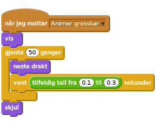
Bytt gjerne ut meldingsnavnet Animer gresskar med noe som passer for din figur. Klikk på skriptet (eller send en melding) for å teste animasjonen. Ser det bra ut?
Legg også til startposisjonen for den figuren:
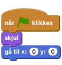
Gå så til scenen og legg på et skript som bytter til riktig bakgrunn for den siste animasjonen. Her har vi brukt den svarte bakgrunnen.
Til slutt legger vi denne siste animasjonen til i hovedløkken som viser animasjonene:
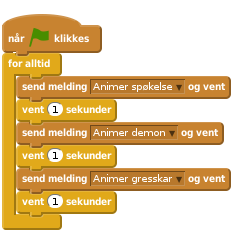
Vi har nå sett noen eksempler på hvordan vi kan lage skumle halloween-animasjoner. Prøv å bruk lignende teknikker for å lage dine egne animasjoner!
Når du er fornøyd med animasjonene dine kan du dele det med familie og venner, ved å trykke Legg ut.
Vi avslutter med å se på hvordan du kan skremme nabolaget med de skumle animasjonene dine slik at alle kan se dem.
Det enkleste er å sette skjermen i vinduet, og klikke på firkanten for fullskjermvisning øverst til venstre under Scratch-logoen. Men hvis du kan låne en prosjektør til Halloween kan du vise animasjonen utendørs, på en vegg eller på et gardin eller laken, slik bildet i begynnelsen viser. I begge tilfeller er det litt dumt at Scratch viser animasjonen med en hvit ramme på skjermen. For å få en bedre visning kan du følge tipsene nedenfor.
Først lager vi en fil som viser animasjonen din i et større vindu med svart bakgrunn. Dette gjør vi med litt HTML-kode. HTML er det språket som brukes til å lage nettsider.
Last ned filen http://kodeklubben.github.io/nb-NO/scratch.1/06/projiser.html. Etter at du har gått til denne adressen kan du velge Fil > lagre som, eller noe som ligner, i menyen til nettleseren din. Legg filen et sted du finner den igjen.
Åpne filen i Notepad eller et tilsvarende program. Du vil se en tekst som ser slik ut:
<html>
<head>
<title>Halloweenimasjon</title>
</head>
<body bgcolor="#000000">
<div style="overflow-y: hidden; height: 890px; margin-left: auto; margin-right: auto; width: 1180px;" id="applet">
<iframe style="margin-top:-56px; margin-left: -10px" allowtransparency="true" width="1200" height="960" src="http://scratch.mit.edu/projects/embed/30923784/?autostart=true" frameborder="0" scrolling="no" seamless="seamless" allowfullscreen=""></iframe>
</div>
</body>
</html>Gjemt inne i denne teksten står det et Scratch-prosjektnummer. I dette tilfelle er nummeret 30923784. Du må bytte dette nummeret med prosjektnummeret ditt.
For å finne prosjektnummeret ditt kan du se i adressefeltet i nettleseren din mens du jobber med prosjektet. Som en del av adressen finner du et 8-sifret tall. Dette er ditt prosjektnummer.
Bytt 30923784 med ditt prosjektnummer og lagre filen.
I nettleseren din kan du nå åpne filen du nettopp endret. Velg Fil > åpne fil, eller noe som ligner, i nettleseren din. Velg den riktige filen.
Du skal nå se animasjonen din på svart bakgrunn.
Koble datamaskinen din til en prosjektør, og vis animasjonen din på et hvitt laken, en gardin eller kanskje en vegg!